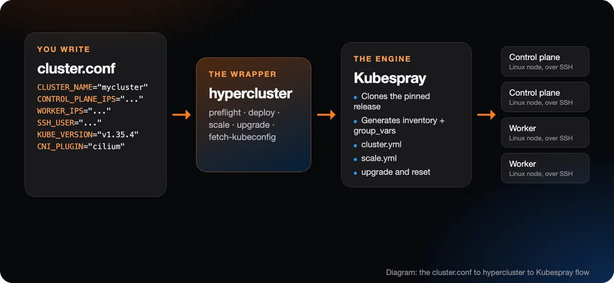
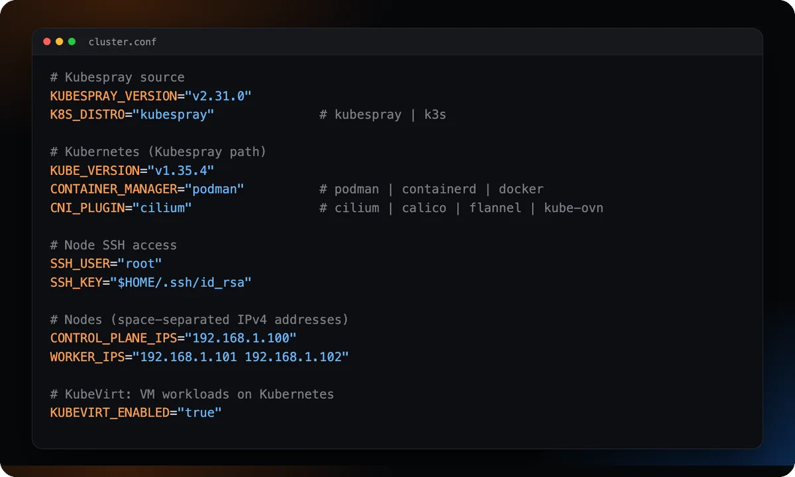
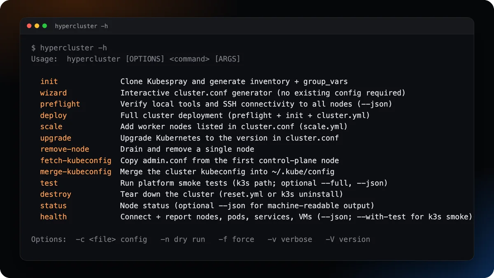
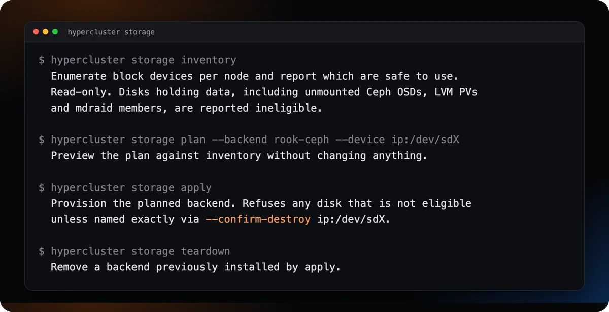

Zyvor · Kubernetes lifecycle
HyperCluster
Kubernetes on your own metal. From one file.
Preflight, deploy, scale, upgrade and kubeconfig, over SSH, from a single cluster.conf. HyperCluster wraps Kubespray for bare metal and private cloud. You describe the cluster once; it pins Kubespray, generates the inventory and group_vars, runs the playbooks over SSH and hands you a kubeconfig. A command-line tool and a macOS desktop app drive the same engine.
Hypercluster-0.2.0-arm64.dmg · macOS, Apple silicon · See current prices · All downloads
Verified by Apple: Developer ID signed and notarized. This applies to the Mac Desktop app DMG only.
- Needs an Apple silicon Mac. The 30-day trial also starts in the app when you accept the licence, and the app never locks you out when it ends.

Run Kubernetes on your own servers, without the wiring.
Describe the cluster once
Nodes, SSH access, Kubernetes version, container manager and CNI live in one cluster.conf file.
Use the servers you already have
There is no cloud provider requirement. Everything runs over SSH to your Linux nodes.
Get a working kubeconfig
HyperCluster runs preflight checks, deploys with Kubespray, and fetches the admin kubeconfig from the first control-plane node.
Kubespray is powerful. Wiring it by hand is not the job.
Inventory files, group_vars, Ansible setup and kubeconfig retrieval all need manual care. HyperCluster puts them behind one cluster.conf and a short list of commands, and keeps every operation on plain SSH.
Features
One file
The whole cluster, in cluster.conf.
Nodes, SSH access, Kubernetes version, container manager and CNI live in one file. Prefer questions to editing? The wizard writes it for you, and the desktop app edits it visually.
Cluster lifecycle commands
Lifecycle
Every step is a command.
Preflight checks your tools and SSH access to every node. Deploy, scale, upgrade, remove a node, fetch the kubeconfig, tear it down. Add -n for a dry run, and --json where scripts need it.
CLI guide, page by page
Storage
Plan first. It will not take a disk with data on it.
Inventory the block devices on each node, preview a plan for local-path, lvm-raw or rook-ceph, then apply. Disks that hold data are reported ineligible, and apply refuses them unless you name each one explicitly.
Provisioning commands
And the rest of the toolbox.
HyperCluster Desktop
A native Mac app on the same engine. A Cluster Studio walks through nodes, storage, network, validate and deploy, with a node topology canvas. Cluster Studio.
Kubespray or k3s
Choose the distribution in cluster.conf. The Kubespray path is the default and supports HA control planes; the k3s path adds Cilium, cert-manager, MetalLB and KubeVirt with CDI.
Day-2 built in
Add workers with scale, move to a new Kubernetes version with upgrade, drain and remove one node, or reset the whole cluster with destroy.
KubeVirt when you want VMs
Install the KubeVirt operator and CDI after bootstrap, list VMs and the template catalog, and preview a VM create.
Find your hosts
Discover VMs and hosts from libvirt, Proxmox, VMware, an SSH scan or a CSV, then feed them into the config.
Health at a glance
Status and health report nodes, pods, services and VMs, and several commands accept --json for scripting.
Hand off to the Zyvor suite
forge-handoff emits a JSON handoff for Forge Day-2 import. Other Zyvor products install after the cluster is up.
Optional AI help
Ask Zyra in the desktop app is off until you enable it in Settings. It calls the provider you configure (an OpenAI-compatible API, Anthropic or a local Ollama), and the key is kept in the macOS keychain.
Plain SSH. No cloud account.
Over SSH
Kubespray and Ansible reach your nodes over SSH. There is no cloud provider requirement; bare metal, VMs and cloud instances all work as long as SSH does.
Preview before you change
A dry-run flag prints what would run, and the storage plan previews before apply.
One cluster at a time
A per-cluster lock stops two runs colliding, and the unlock command clears a stale one after a crash.
Requirements.
- Engine
- Kubespray v2.32.0Pinned by KUBESPRAY_VERSION in cluster.conf.
- Kubernetes
- v1.36.4 by defaultSet KUBE_VERSION in cluster.conf.
- Container manager
- Podman, containerd or DockerPodman is the default.
- CNI
- Cilium, Calico, Flannel or kube-ovnCilium is the default.
- Nodes
- Linux, reachable over SSHBare metal, VMs or cloud instances.
- Your Mac
- Apple Silicon, macOS 11 or laterRelease artifacts are built for arm64.
- Mac tooling
- bash 5, Python 3.11+, Ansible, kubectl, helmInstalled with Homebrew; the product documents a setup script.
- Version
- 0.2.0Desktop and CLI.
Stated plainly
HyperCluster is closed source: this repository holds customer documentation, and the notarized Desktop app is on the releases page as a 30-day trial. It is Apple Silicon only and has not been tested on Intel Macs. macOS may show a Gatekeeper prompt on first launch of the desktop app; the README shows how to continue. Cluster nodes need internet access during deploy to pull images.
From request to running cluster.
Download the app
Get the notarized DMG, drag Hypercluster to Applications and accept the licence in the app: the 30-day trial starts on your Mac. Prefer a walkthrough? Book a demo.
Describe the cluster
Run
hypercluster wizardto write cluster.conf, or edit it by hand, thenhypercluster preflightto check your tools and SSH access to every node.Deploy and connect
Run
hypercluster deploy, thenhypercluster fetch-kubeconfig. Next: Getting started, Admin basics.
The core flow
hypercluster wizard # write cluster.conf
hypercluster preflight # tools and SSH to every node
hypercluster deploy # Kubespray cluster.yml over SSH
hypercluster fetch-kubeconfig # admin.conf from the first control-plane nodePrices and licenses
Current prices are on zyvor.dev. Online purchase for HyperCluster is not open yet, so please contact sales for a licence key or a quote. A 30-day trial is available on request from sales@zyvor.dev (a paid evaluation Order at no charge).
Contact salesAsk for a 30-day trialSee current prices
HyperCluster is closed source under the Zyvor Production Licence v2.0.
Questions, answered.
Is HyperCluster open source?
No. It is closed source. This repository contains customer documentation only, under the Zyvor Production Licence v2.0.
Can I download it?
Yes: the notarized Desktop app for Apple Silicon is on the releases page as a 30-day trial. When the trial ends it keeps working; a licence key keeps you licensed and supported.
How is it different from running Kubespray myself?
It runs Kubespray for you. It pins a Kubespray release, generates the inventory and group_vars from cluster.conf, runs the cluster, scale and upgrade playbooks, and fetches the kubeconfig. The engine underneath is still Kubespray.
Do I need a cloud account?
No. There is no cloud provider requirement. Everything runs over SSH to your Linux nodes.
Can it build lab clusters too?
Yes. Set the distribution to k3s in cluster.conf for a lightweight cluster with Cilium, cert-manager, MetalLB and KubeVirt with CDI.
Does it use AI?
Only if you turn it on. Ask Zyra in the desktop app is disabled by default. When enabled it calls the provider you configure, which can be a local Ollama.
What does it cost?
See the pricing page, or ask sales@zyvor.dev.
Which Mac do I need?
An Apple Silicon Mac. Release artifacts are built for arm64.